<title>Publish Flows</title>
<link rel="stylesheet" href="https://fonts.googleapis.com/css2?family=IBM+Plex+Sans:wght@400;500;600&family=Poppins:wght@500;600&display=swap">
<style>
/* Layout: one flow per section; each flow is a horizontal strip of numbered screens with arrows, scrolling sideways on small screens. */
:root{--bg:#f6f7f9;--surface:#ffffff;--fg:#1a2432;--muted:#5b6878;--line:#dfe4ea;--accent:#0b2d4a;--accent-soft:#e7eef7;--ai:#5b3df5;--ai-soft:#f3f0ff;--display:"Poppins",system-ui,sans-serif;--body:"IBM Plex Sans",system-ui,sans-serif}
@media (prefers-color-scheme:dark){:root:not([data-theme="light"]){--bg:#121821;--surface:#1a2230;--fg:#e6eaf0;--muted:#9aa6b6;--line:#2b3542;--accent:#8fb7e6;--accent-soft:#1c2a3b;--ai:#b4a4ff;--ai-soft:#2a2347;color-scheme:dark}}
:root[data-theme="dark"]{--bg:#121821;--surface:#1a2230;--fg:#e6eaf0;--muted:#9aa6b6;--line:#2b3542;--accent:#8fb7e6;--accent-soft:#1c2a3b;--ai:#b4a4ff;--ai-soft:#2a2347;color-scheme:dark}
body{background:var(--bg);color:var(--fg);font:16px/1.6 var(--body);padding-inline:16px;padding-block:40px 72px}
main{max-width:76rem;margin:0 auto;display:flex;flex-direction:column;gap:2.5rem}
h1,h2,h3{font-family:var(--display);font-weight:600;text-wrap:balance;margin:0;line-height:1.25}
h1{font-size:2rem}h2{font-size:1.3rem}h3{font-size:1rem}
p,ul,ol{margin:0;max-width:72ch}ul,ol{padding-left:1.2rem;display:flex;flex-direction:column;gap:.3rem}
a{color:var(--accent)}
.eyebrow{font:500 .72rem var(--display);text-transform:uppercase;letter-spacing:.1em;color:var(--accent);margin-bottom:.4rem}
.meta{color:var(--muted);font-size:.9rem}
.tldr{background:var(--accent-soft);border:1px solid var(--line);border-radius:12px;padding:1.1rem 1.4rem;display:flex;flex-direction:column;gap:.6rem}
.toc{display:flex;flex-wrap:wrap;gap:.4rem .9rem;font-size:.9rem;max-width:none}
section.flow{display:flex;flex-direction:column;gap:.9rem;padding-top:1.5rem;border-top:1px solid var(--line)}
.strip{display:flex;gap:.5rem;overflow-x:auto;padding:.25rem 0 .75rem;max-width:none;align-items:flex-start;scroll-snap-type:x proximity}
.step{flex:0 0 272px;display:flex;flex-direction:column;gap:.45rem;scroll-snap-align:start;min-width:0}
.step a{display:block;background:var(--surface);border:1px solid var(--line);border-radius:8px;overflow:hidden;aspect-ratio:1390/1000}
.step img{display:block;width:100%;height:100%;object-fit:cover;object-position:top}
.step .n{font:600 .72rem var(--display);color:var(--muted);letter-spacing:.06em;text-transform:uppercase}
.step .n b{display:inline-flex;align-items:center;justify-content:center;width:1.3rem;height:1.3rem;border-radius:50%;background:var(--accent);color:#fff;font-size:.72rem;margin-right:.4rem}
.step .n b.ai{background:var(--ai)}
.step p{font-size:.88rem;line-height:1.45;color:var(--fg)}
.arrow{flex:0 0 auto;align-self:center;color:var(--muted);padding:0 .1rem;margin-top:-3rem}
.branch{border-left:3px solid var(--ai);background:var(--ai-soft);border-radius:0 8px 8px 0;padding:.6rem .9rem;font-size:.9rem;max-width:none}
.rules{display:grid;grid-template-columns:repeat(2,minmax(0,1fr));gap:.8rem 2rem;max-width:none}
.rules div{display:flex;flex-direction:column;gap:.35rem;min-width:0}
.rules h3{font-size:.8rem;text-transform:uppercase;letter-spacing:.06em;color:var(--muted)}
.rules ul{font-size:.92rem}
.foot{font-size:.85rem;color:var(--muted);border-top:1px solid var(--line);padding-top:1rem}
@media (max-width:760px){.rules{grid-template-columns:1fr}.step{flex-basis:240px}}
</style>

<main>
<header>
  <div class="eyebrow">Publish · every flow · 17 Oct 2026</div>
  <h1>Publish flows</h1>
  <p class="meta" style="margin-top:.5rem">Every path through the polished Publish workflow, screen by screen, as built in the prototype. Select a screen to open it full size. The interactive version is the canvas; this page is the map.</p>
  <nav class="toc" aria-label="Flows" style="margin-top:.8rem"><a href="#f1">1 Publish a draft</a> · <a href="#f2">2 Send a standard back</a> · <a href="#f3">3 Unlock AI readiness</a> · <a href="#f4">4 Auto-format with AI</a> · <a href="#f5">5 Read in full</a> · <a href="#f6">6 Resume a draft</a> · <a href="#f7">7 First publication</a> · <a href="#f8">8 Publish a final</a> · <a href="#rules">Rules</a></nav>
</header>

<section class="tldr" aria-labelledby="t">
  <h2 id="t">The shape</h2>
  <p>A landing page, then four steps: <b>Standards &amp; content</b> → <b>Readiness check</b> → <b>Cover &amp; signers</b> → <b>Preview &amp; publish</b>. Content problems leave the workflow through <b>Send back</b>; formatting is fixed in Preview with <b>Auto-format</b>; AI is opt-in, costed and always a suggestion. A draft can be published at any time; a final needs every selected standard approved and three confirmations.</p>
</section>

<!-- 1 -->
<section class="flow" id="f1" aria-labelledby="h1">
  <div><div class="eyebrow">Flow 1 · the main path</div><h2 id="h1">Publish an internal draft</h2><p class="meta">Alex Carter, Accreditation Coordinator, publishes Draft 4 of the Compliance Certification.</p></div>
  <div class="strip">
    <div class="step"><span class="n"><b>1</b>Landing</span><a href="shots/L0.png"></a><p>Choose source, cycle and template. Start is inactive until a template is chosen and says so. Or continue a draft from the table.</p></div>
    <span class="arrow" aria-hidden="true">→</span>
    <div class="step"><span class="n"><b>2</b>Step 1</span><a href="shots/S1.png"></a><p>Tick standards by section; search and filter; set what prints with each standard and the response type.</p></div>
    <span class="arrow" aria-hidden="true">→</span>
    <div class="step"><span class="n"><b>3</b>Step 2</span><a href="shots/S2.png"></a><p>Readiness score 64 (rules, free): internal draft ready, final not yet. Findings by standard. Nothing blocks a draft.</p></div>
    <span class="arrow" aria-hidden="true">→</span>
    <div class="step"><span class="n"><b>4</b>Step 3</span><a href="shots/S3.png"></a><p>Institution from the profile, preparer and signers by role, submit date, logo and cover letter; live cover preview.</p></div>
    <span class="arrow" aria-hidden="true">→</span>
    <div class="step"><span class="n"><b>5</b>Step 4</span><a href="shots/S4.png"></a><p>Read the document; confirmations unlock after all 16 sections are viewed; choose PDF, Word, HTML package or Website; internal draft or final; file name.</p></div>
    <div class="step"><span class="n"><b>1b</b>Order sections</span><a href="shots/S4o.png">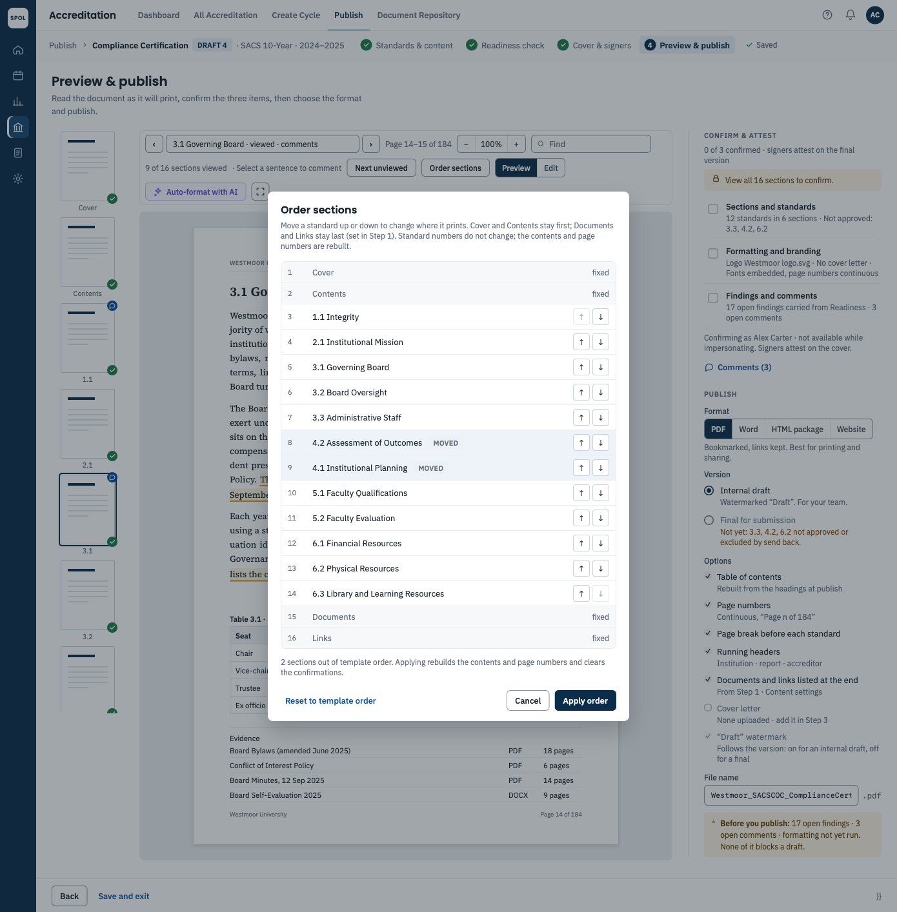</a><p>"Order sections" in the toolbar lists the sixteen sections in print order. Cover and Contents stay first, Documents and Links stay last; the arrows move a standard, "moved" marks what changed, Reset returns to the template. Applying reorders the thumbnails and navigation, rebuilds contents and page numbers, and clears the confirmations.</p></div>
    <span class="arrow" aria-hidden="true">→</span>
    <div class="step"><span class="n"><b>6</b>Published</span><a href="shots/S4b.png"></a><p>Draft 4 published: download, copy link, share; what's next; recorded in the audit trail.</p></div>
  </div>
</section>

<!-- 2 -->
<section class="flow" id="f2" aria-labelledby="h2">
  <div><div class="eyebrow">Flow 2 · a branch from Step 2</div><h2 id="h2">Send a standard back</h2><p class="meta">A standard is not good enough. It goes back to the person who holds it, with the findings as a comment, through the approval chain. Nothing is fixed inside Publish.</p></div>
  <div class="strip">
    <div class="step"><span class="n"><b>1</b>Step 2</span><a href="shots/S2.png"></a><p>4.2 Assessment of Outcomes has four findings: missing evidence, an oversized image, a heading level. Click Send back.</p></div>
    <span class="arrow" aria-hidden="true">→</span>
    <div class="step"><span class="n"><b>1a</b>Review</span><a href="shots/S2f.png">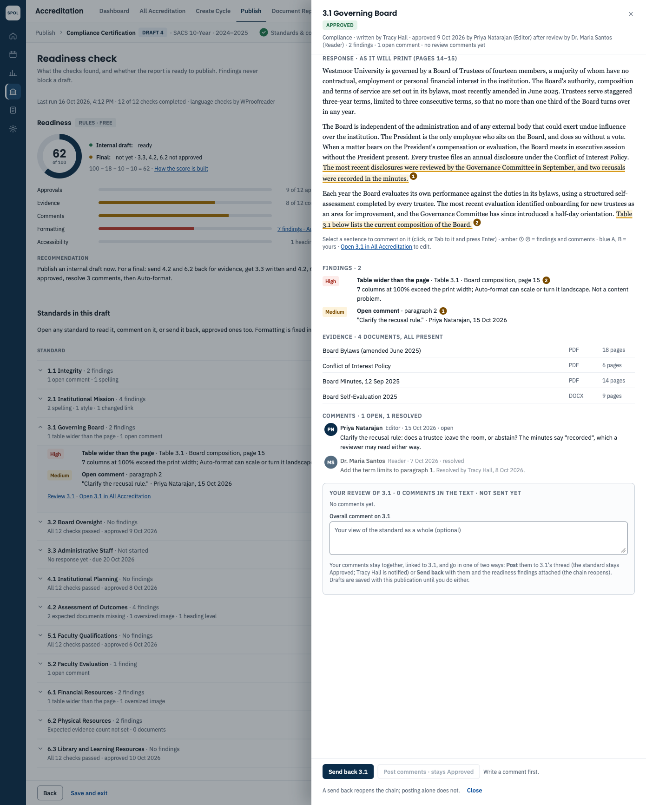</a><p>Review opens any standard, approved or not: the response as it will print with the findings and open comments marked in the text, the evidence and the comment thread. Select any passage to pin a comment to it (blue letter marks); add one overall comment for the standard; they stay together under "Your review". Then either post them to the thread (the standard stays Approved) or send them back together.</p></div>
    <span class="arrow" aria-hidden="true">→</span>
    <div class="step"><span class="n"><b>1b</b>Bundled</span><a href="shots/S2g.png">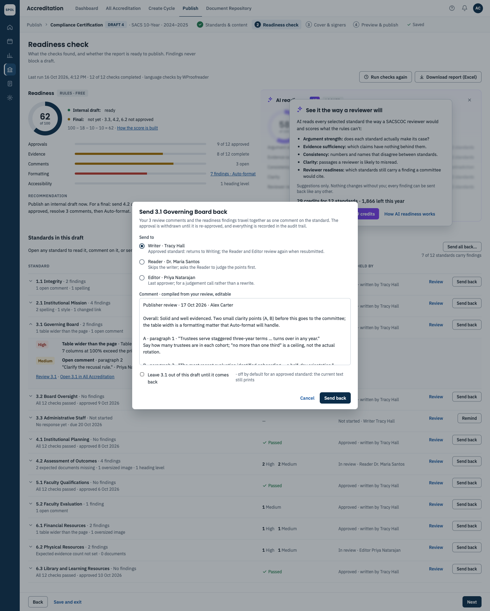</a><p>Send back with 3 comments compiles the overall comment, each lettered comment with its quote and paragraph, and the readiness findings into one editable comment; for an approved standard "Leave out of this draft" is off by default, so the current text still prints while the writer answers.</p></div>
    <span class="arrow" aria-hidden="true">→</span>
    <div class="step"><span class="n"><b>2</b>Dialog</span><a href="shots/S2b.png">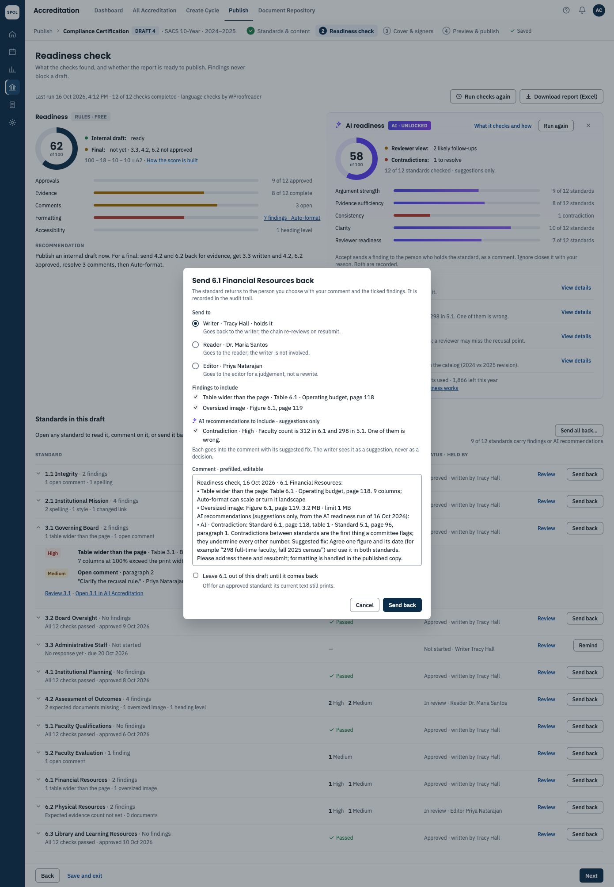</a><p>Choose the writer, the reader who holds it or the editor; one line says what each does to the review. The comment is prefilled with the findings. Optionally leave 4.2 out of this draft until it returns.</p></div>
    <div class="step"><span class="n"><b>3b</b>Send all back</span><a href="shots/S2i.png">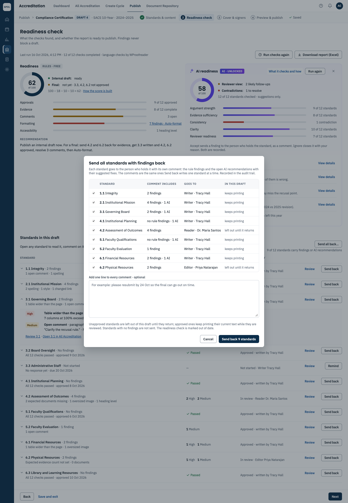</a><p>"Send all back…" beside the standards list opens one dialog: every standard with findings, who holds it, what its comment will contain (rule findings and, when AI readiness is unlocked, the open AI recommendations with their suggested fixes), whether it keeps printing or is left out, and an optional line added to every comment.</p></div>
    <div class="step"><span class="n"><b>3c</b>After send all</span><a href="shots/S2j.png">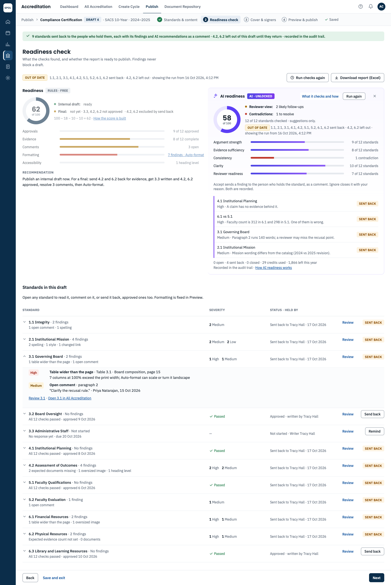</a><p>Nine rows carry "Sent back", the AI findings on them are marked sent, the unapproved ones are left out of the draft, and the run is marked out of date. Recorded in the audit trail.</p></div>
    <span class="arrow" aria-hidden="true">→</span>
    <div class="step"><span class="n"><b>3</b>After</span><a href="shots/S2c.png">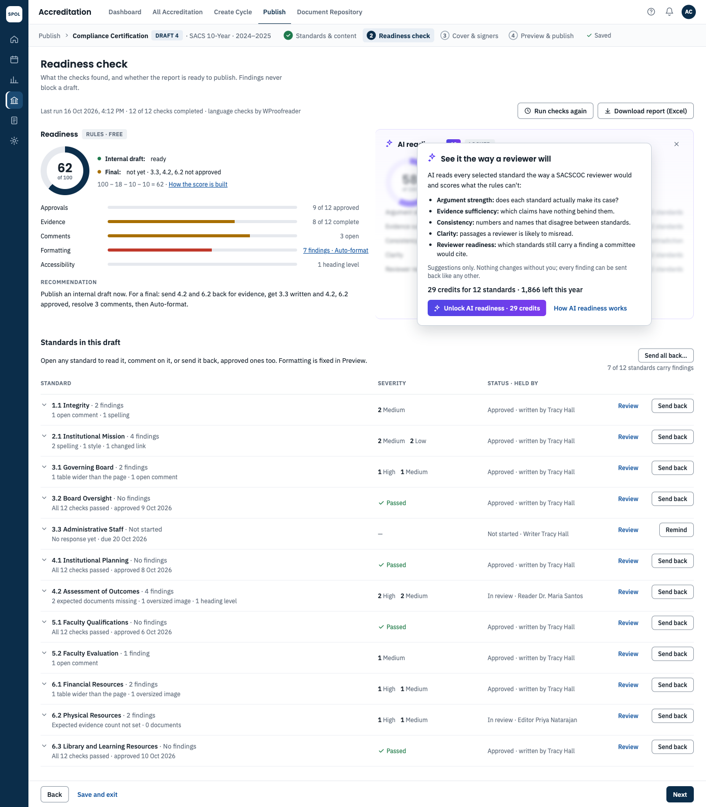</a><p>"4.2 sent back to Tracy Hall" is confirmed; the row reads Sent back; the audit trail has the entry. The coordinator carries on to Step 3.</p></div>
  </div>
  <div class="branch"><b>Where it rejoins:</b> the writer fixes 4.2 in All Accreditation, the chain re-approves it, and the next readiness run clears the finding. Meanwhile a draft can still be published without 4.2.</div>
</section>

<!-- 3 -->
<section class="flow" id="f3" aria-labelledby="h3">
  <div><div class="eyebrow">Flow 3 · optional, AI</div><h2 id="h3">Unlock AI readiness</h2><p class="meta">The rules score is free. The AI score is shown blurred with an unlock card that explains what it adds and what it costs. Unlocking is per report and per run.</p></div>
  <div class="strip">
    <div class="step"><span class="n"><b class="ai">1</b>Locked</span><a href="shots/S2.png"></a><p>"See it the way a reviewer will": argument strength, evidence sufficiency, consistency, clarity. 29 credits for 12 standards. Suggestions only.</p></div>
    <span class="arrow" aria-hidden="true">→</span>
    <div class="step"><span class="n"><b class="ai">2</b>Unlocked, in detail</span><a href="shots/S2d.png">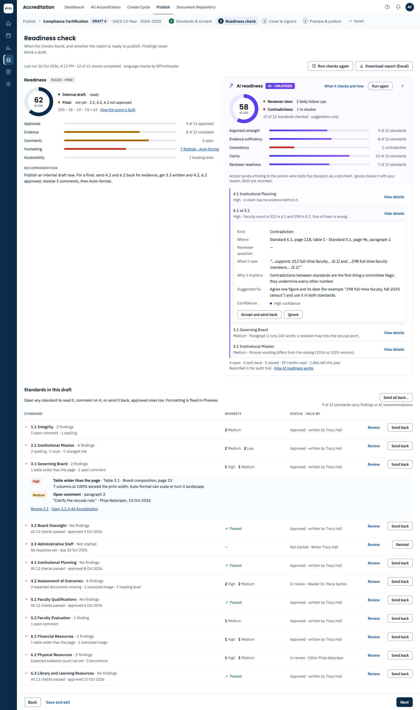</a><p>AI score 58, five bars, and concrete findings. Open one: where it is, the passage the AI saw, why a reviewer would care, a suggested fix, a confidence level.</p></div>
    <span class="arrow" aria-hidden="true">→</span>
    <div class="step"><span class="n"><b>3a</b>Accept</span><a href="shots/S2b.png"></a><p><b>Accept and send back:</b> the finding goes to the person who holds the standard as a comment, exactly like a rule finding.</p></div>
    <span class="arrow" aria-hidden="true">or</span>
    <div class="step"><span class="n"><b>3b</b>Ignore</span><a href="shots/S2e.png">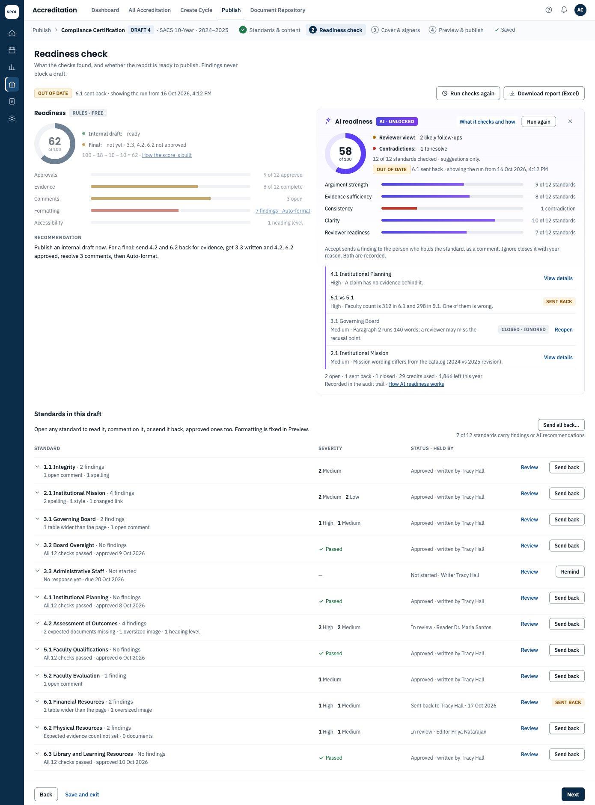</a><p><b>Ignore:</b> give a reason (not an issue, already covered, fix later, accepted risk); the finding is marked Closed and can be reopened. Both decisions are recorded; the panel counts open, sent back and closed.</p></div>
  </div>
</section>

<!-- 4 -->
<section class="flow" id="f4" aria-labelledby="h4">
  <div><div class="eyebrow">Flow 4 · optional, AI, in Step 4</div><h2 id="h4">Auto-format the whole document</h2><p class="meta">Formatting is the publisher's job. One AI pass fixes tables, images, heading levels, spacing, citation style and the contents, and never changes wording.</p></div>
  <div class="strip">
    <div class="step"><span class="n"><b>1</b>Step 4</span><a href="shots/S4.png"></a><p>The document toolbar carries "Auto-format with AI" in the AI colour. Readiness also points here for formatting findings.</p></div>
    <span class="arrow" aria-hidden="true">→</span>
    <div class="step"><span class="n"><b class="ai">2</b>Ask</span><a href="shots/S4a.png">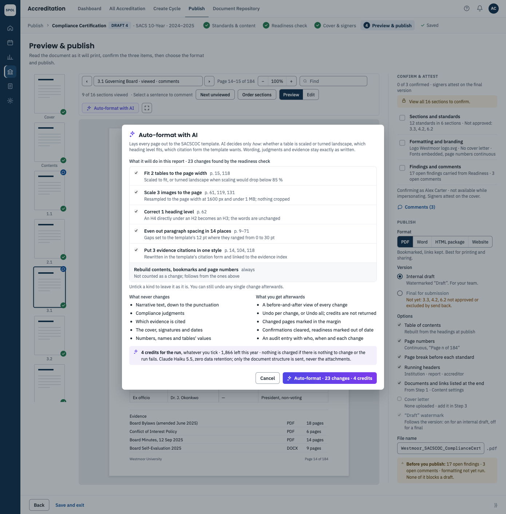</a><p>What it fixes, what it never touches, what happens afterwards, and the cost (4 credits). Auto-format document or Cancel. While it runs, a progress modal shows pages laid out and what has been decided per kind; Cancel applies nothing and charges nothing.</p></div>
    <span class="arrow" aria-hidden="true">→</span>
    <div class="step"><span class="n"><b class="ai">3</b>After</span><a href="shots/S4c.png">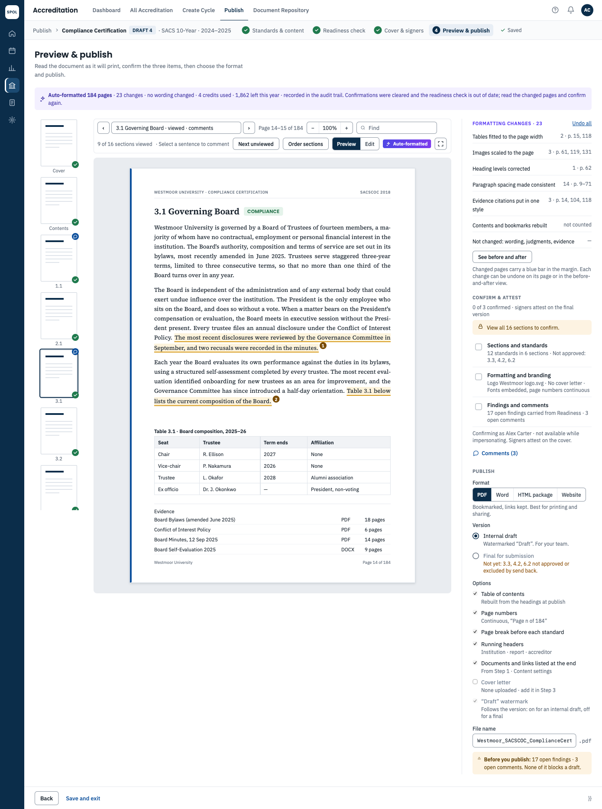</a><p>184 pages formatted, 23 changes listed with Undo per change or for everything; changed pages carry a margin bar; confirmations are cleared and readiness is out of date, so the publisher rereads.</p></div>
    <span class="arrow" aria-hidden="true">→</span>
    <div class="step"><span class="n"><b>3a</b>Before / after</span><a href="shots/S4d.png">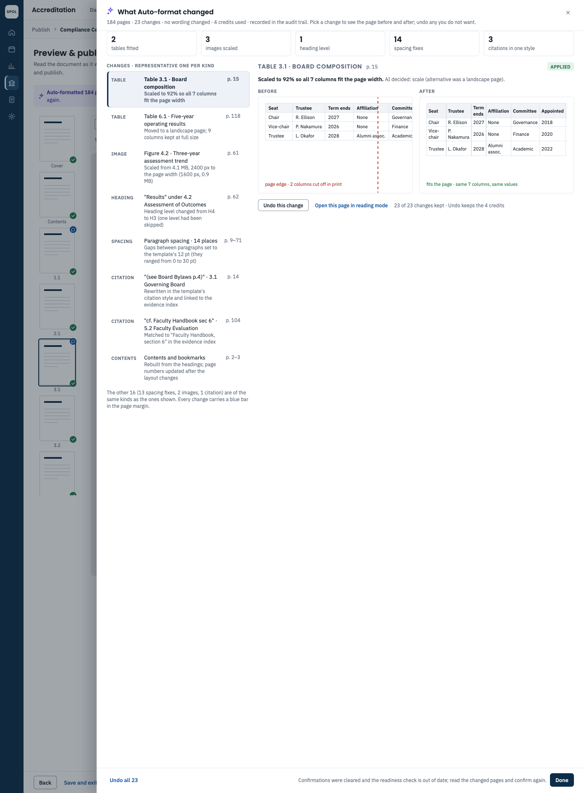</a><p>"See before and after" opens every change with the fragment before and after, the page edge marked where content was cut off, who decided it (rules or AI, with the alternative), and Undo this change / Apply again; the count of changes kept updates and Undo never refunds.</p></div>
  </div>
</section>

<!-- 5 -->
<section class="flow" id="f5" aria-labelledby="h5">
  <div><div class="eyebrow">Flow 5 · reading</div><h2 id="h5">Read the document in full</h2><p class="meta">Confirming means reading. Reading mode gives the pages the whole screen.</p></div>
  <div class="strip">
    <div class="step"><span class="n"><b>1</b>Step 4</span><a href="shots/S4.png"></a><p>Click the maximize button in the document toolbar.</p></div>
    <span class="arrow" aria-hidden="true">→</span>
    <div class="step"><span class="n"><b>2</b>Reading mode</span><a href="shots/S4r.png">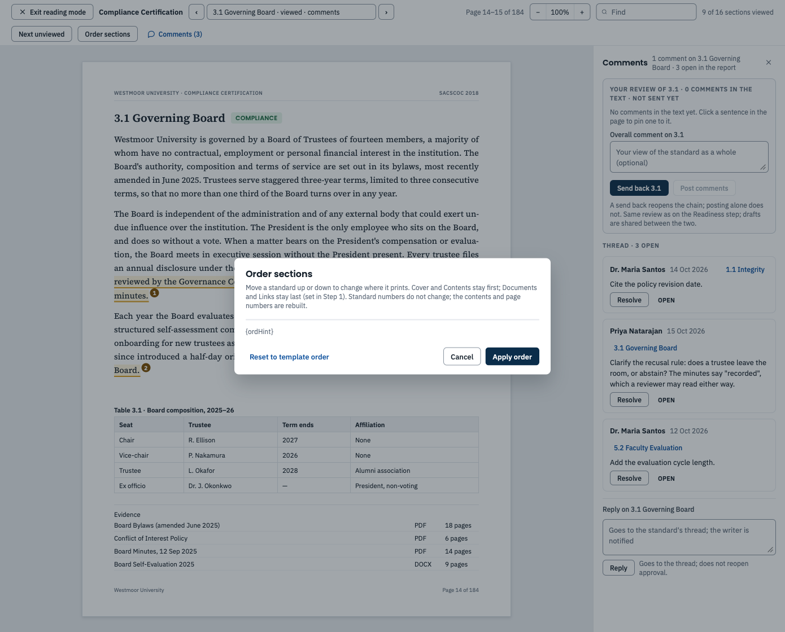</a><p>No rail, header, thumbnails or side column. A slim bar: exit, page, zoom, sections viewed, next unviewed, comments. Viewed sections count towards the confirmations.</p></div>
    <span class="arrow" aria-hidden="true">→</span>
    <div class="step"><span class="n"><b>3</b>Back</span><a href="shots/S4.png"></a><p>Exit returns to Step 4 with the viewed count carried over; once 16 of 16, the three confirmations unlock.</p></div>
  </div>
</section>

<!-- 6 -->
<section class="flow" id="f6" aria-labelledby="h6">
  <div><div class="eyebrow">Flow 6 · coming back</div><h2 id="h6">Resume a draft</h2><p class="meta">Drafts are saved at every step; the landing table says where each one is.</p></div>
  <div class="strip">
    <div class="step"><span class="n"><b>1</b>Landing</span><a href="shots/L0.png"></a><p>"Compliance Certification · Draft 4 · Step 2 · Readiness check". Click the title.</p></div>
    <span class="arrow" aria-hidden="true">→</span>
    <div class="step"><span class="n"><b>2</b>The step</span><a href="shots/S2.png"></a><p>Opens at the step reached, with everything saved. Completed steps in the stepper are links back.</p></div>
    <span class="arrow" aria-hidden="true">→</span>
    <div class="step"><span class="n"><b>3</b>Save and exit</span><a href="shots/L0.png"></a><p>Any step's footer has Save and exit; the table updates its "Where it is" and "Last edited".</p></div>
  </div>
</section>

<!-- 7 -->
<section class="flow" id="f7" aria-labelledby="h7">
  <div><div class="eyebrow">Flow 7 · first time</div><h2 id="h7">First publication in a cycle</h2></div>
  <div class="strip">
    <div class="step"><span class="n"><b>1</b>Empty landing</span><a href="shots/L0e.png">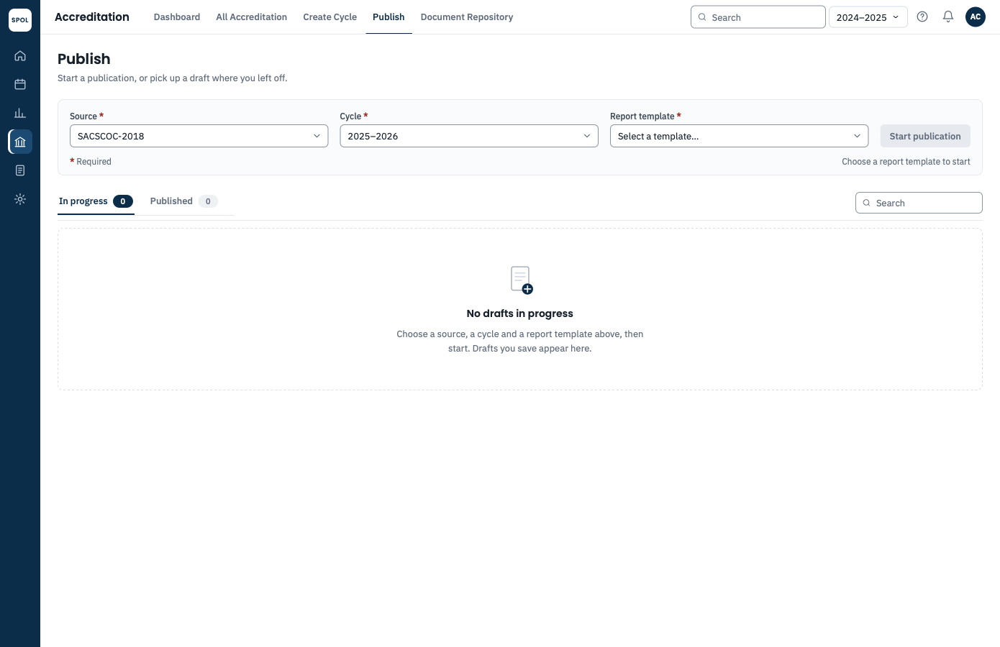</a><p>A designed empty state says what to do: choose a source, a cycle and a template above, then start.</p></div>
    <span class="arrow" aria-hidden="true">→</span>
    <div class="step"><span class="n"><b>2</b>Step 1</span><a href="shots/S1.png"></a><p>Start opens Step 1 with the three choices already applied; the rest is Flow 1.</p></div>
  </div>
</section>

<!-- 8 -->
<section class="flow" id="f8" aria-labelledby="h8">
  <div><div class="eyebrow">Flow 8 · the final</div><h2 id="h8">Publish a final for submission</h2><p class="meta">Same four steps, with the bar raised. Not yet reachable in the sample data on purpose: three standards are not approved.</p></div>
  <div class="strip">
    <div class="step"><span class="n"><b>1</b>Step 2</span><a href="shots/S2.png"></a><p>The dashboard says "Final: not yet" and lists what is missing: 3.3 written, 4.2 and 6.2 approved, comments resolved.</p></div>
    <span class="arrow" aria-hidden="true">→</span>
    <div class="step"><span class="n"><b>2</b>Step 4</span><a href="shots/S4.png"></a><p>"Final for submission" is selectable only when every selected standard is approved; otherwise its reason is shown. The cover carries the signatures; no watermark.</p></div>
    <span class="arrow" aria-hidden="true">→</span>
    <div class="step"><span class="n"><b>3</b>Published</span><a href="shots/S4b.png"></a><p>What's next shows "Final for submission · Blocked" with the reason until the approvals land.</p></div>
  </div>
</section>

<section class="flow" id="rules" aria-labelledby="hr">
  <div><h2 id="hr">Rules that hold across every flow</h2></div>
  <div class="rules">
    <div><h3>Publishing</h3><ul><li>A draft can be published at any time; findings never block it.</li><li>A final needs every selected standard approved, none excluded by a send back, no uncleared injection flag, readiness not out of date, and 3 of 3 confirmations.</li><li>Confirmations unlock only after all 16 sections are viewed, and are blocked while impersonating.</li><li>Editing or Auto-format clears the confirmations and marks readiness out of date.</li><li>Published versions can't be deleted; drafts can, after confirming, with an audit entry.</li></ul></div>
    <div><h3>AI</h3><ul><li>AI is opt-in, costed in credits before it runs, and recorded in the audit trail.</li><li>AI suggests; a person accepts. Auto-format never changes wording.</li><li>Rule-based checks are free and never labelled AI.</li><li>One accent colour marks everything AI.</li></ul></div>
    <div><h3>Quality</h3><ul><li>Every selected standard can be opened from Readiness, approved or not: read it, comment on it, or send it back. Content problems leave Publish through Send back, to the writer, reader or editor, with the findings as a comment.</li><li>Formatting is fixed in Preview, by the publisher, in one pass.</li></ul></div>
    <div><h3>Accessibility</h3><ul><li>One primary action per screen; disabled controls say why in text.</li><li>Status is never colour alone; scores have text equivalents.</li><li>Dialogs are real modals; focus returns on close.</li><li>44 px targets and stacked layouts on a phone (<a href="shots/S1-phone.png">example</a>).</li></ul></div>
  </div>
</section>

<p class="foot">Screens rendered at 1390 px from the prototype canvas. Companion pages: the polish plan (originals beside proposals) and the PRD.</p>
</main>
